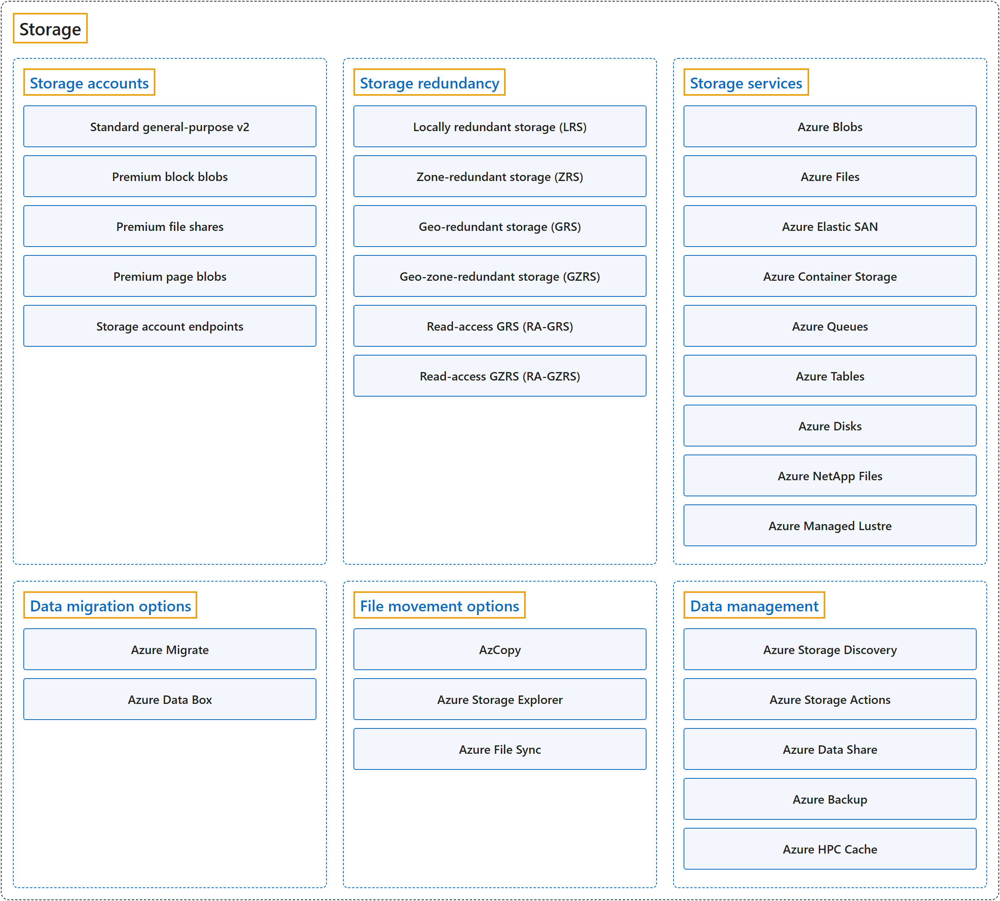

8. Storage
Classification

Glossary
| Term | Definition | 中文翻译 | Source |
|---|---|---|---|
| Storage 存储 |
"Cloud storage is a way of saving data on remote servers where it can be accessed online instead of on local computers or physical hard drives." | 云存储是一种把数据保存在远程服务器上的方式，数据可以在线访问，而不是保存在本地计算机或物理硬盘上。 | Microsoft, n.d.-c, para. 1 |
| Storage accounts 存储帐户 |
"A storage account provides a unique namespace for your Azure Storage data that's accessible from anywhere in the world over HTTP or HTTPS." | 存储帐户提供一个唯一的命名空间，用于存放你的 Azure 存储数据，可以通过 HTTP 或 HTTPS 从世界任何地方访问。 | Microsoft, n.d.-b, "Describe Azure storage accounts" unit, para. 1 |
| Storage redundancy 存储冗余 |
"Azure Storage keeps multiple copies of data to protect against hardware failures, outages, and regional disasters." | Azure 存储会保留多个数据副本，以防范硬件故障、服务中断和区域性灾难。 | Microsoft, n.d.-b, "Describe Azure storage redundancy" unit, para. 1 |
| Storage services 存储服务 |
"Azure Storage includes these core data services: Azure Blobs ... Azure Files ... Azure Queues ... Azure Disks ... Azure Tables ..." | Azure 存储包括以下核心数据服务：Azure Blobs……Azure Files……Azure Queues……Azure Disks……Azure Tables…… | Microsoft, n.d.-b, "Describe Azure storage services" unit, para. 1 |
| Data migration options 数据迁移选项 |
"Azure supports both real-time migration of infrastructure, applications, and data using Azure Migrate as well as asynchronous migration of data using Azure Data Box." | Azure 既支持对基础结构、应用程序和数据进行实时迁移（使用 Azure Migrate），也支持对数据进行异步迁移（使用 Azure Data Box）。 | Microsoft, n.d.-b, "Identify Azure data migration options" unit, para. 1 |
| File movement options 文件移动选项 |
"... Azure also has tools designed to help you move or interact with individual files or small file groups." | ……Azure 还提供一些工具，帮助你移动或处理单个文件或小型文件组。 | Microsoft, n.d.-b, "Identify Azure file movement options" unit, para. 1 |
| Data management 数据管理 |
(context) "Tools and services for managing your data in Azure Storage" | （语境）工具和服务，用于管理 Azure 存储中的数据。 | Microsoft, n.d.-a, "Data management" section |
Coverage
| Certification | Skill area |
|---|---|
| AZ-900 Microsoft Azure Fundamentals | Describe Azure architecture and services (35–40%) |
References
- Microsoft. (n.d.-a). Azure Storage documentation. Microsoft Learn. Retrieved October 27, 2026, from https://learn.microsoft.com/en-us/azure/storage/
- Microsoft. (n.d.-b). Describe Azure storage services [Training module]. Microsoft Learn. Retrieved October 22, 2026, from https://learn.microsoft.com/en-us/training/modules/describe-azure-storage-services/
- Microsoft. (n.d.-c). What is cloud storage? Microsoft Azure. Retrieved October 22, 2026, from https://azure.microsoft.com/en-us/resources/cloud-computing-dictionary/what-is-cloud-storage
- Microsoft. (2026a). Introduction to Azure Storage. Microsoft Learn. https://learn.microsoft.com/en-us/azure/storage/common/storage-introduction
- Microsoft. (2026b). Study guide for Exam AZ-900: Microsoft Azure Fundamentals. Microsoft Learn. https://learn.microsoft.com/en-us/credentials/certifications/resources/study-guides/az-900